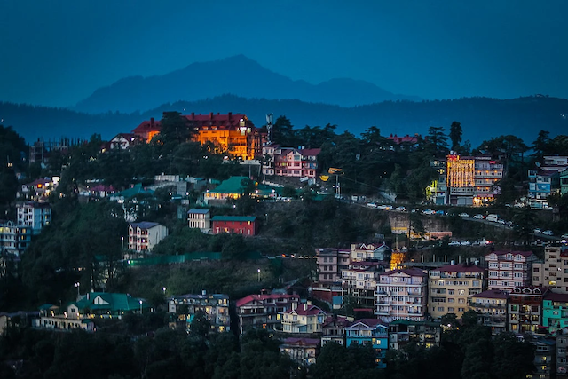
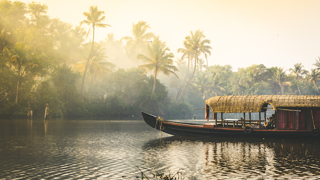
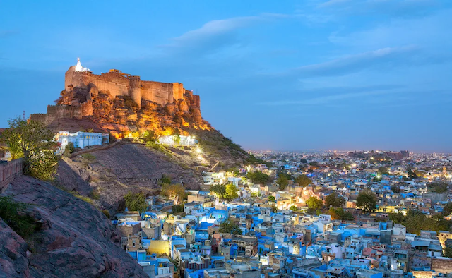
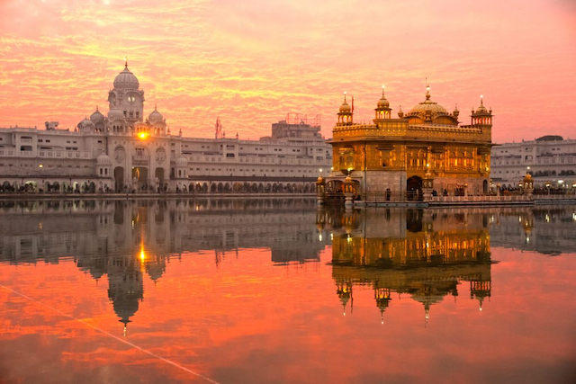

Four of the most beautiful places in India to visit!!
Shimla- a city located in the Himalayan foothills

Shimla is a popular tourist destination in the Himalayan foothills.
Often referred to as the 'Queen of Hills,' has neo-gothic buildings
surrounded by a thick forest with outstanding views.
'The Mall' is the main shopping street and the city's hub where tourists
and locals like to meet, shop, and eat. This area also has many clubs and bars,
great for those looking to step it up a gear.
The Backwaters of Kerala

The backwaters are a beautiful chain of lakes and lagoons along the Arabian
sea coast and are a place in India that definitely shouldn’t be missed –
they are considered to be the number one tourist destination in India.
There are dozens of villages and communities throughout this area which
you can visit and get a real sense of everyday life and culture in this
interesting place.
Jodhpur- the 'Blue City'

Jodhpur in Rajasthan is known as the ‘Blue City’ as so many of this city’s
buildings are painted in a Brahmin blue colour. Residents did this to distinguish
themselves as Brahmins. This isn’t the only history to be found here as it’s also
home to the magnificent Mehrangarh Fort. Inside one of India’s largest forts is Maharaja
Gaj Singh II’s personal collection of riches, and there are a lot of them, with over 15,000
treasures to see in total
Golden Temple- a spritual place

The Golden Temple (Harmandir Sahib) is considered the holiest shrine in Sikhism and draws people from
all over the world to marvel and worship at it. Everyone that visits the temple can sit down for a free meal,
known as langar, which is served to 50,000 people by hundreds of volunteers every day.